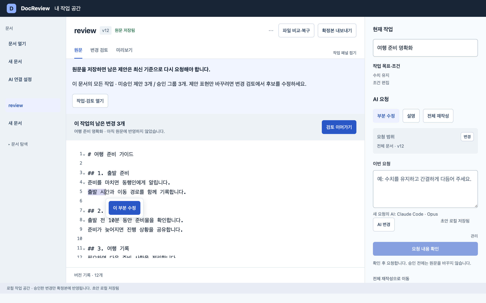
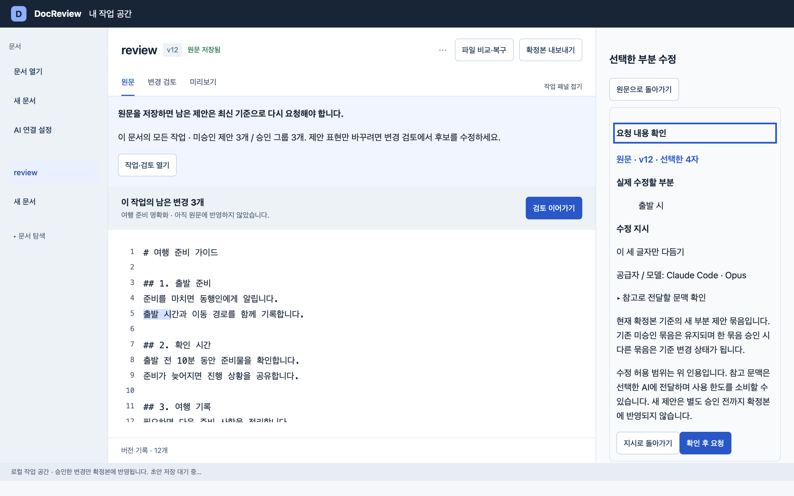
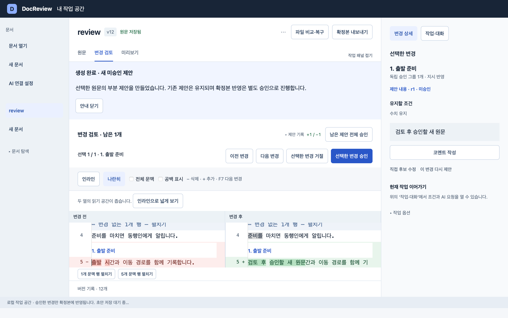
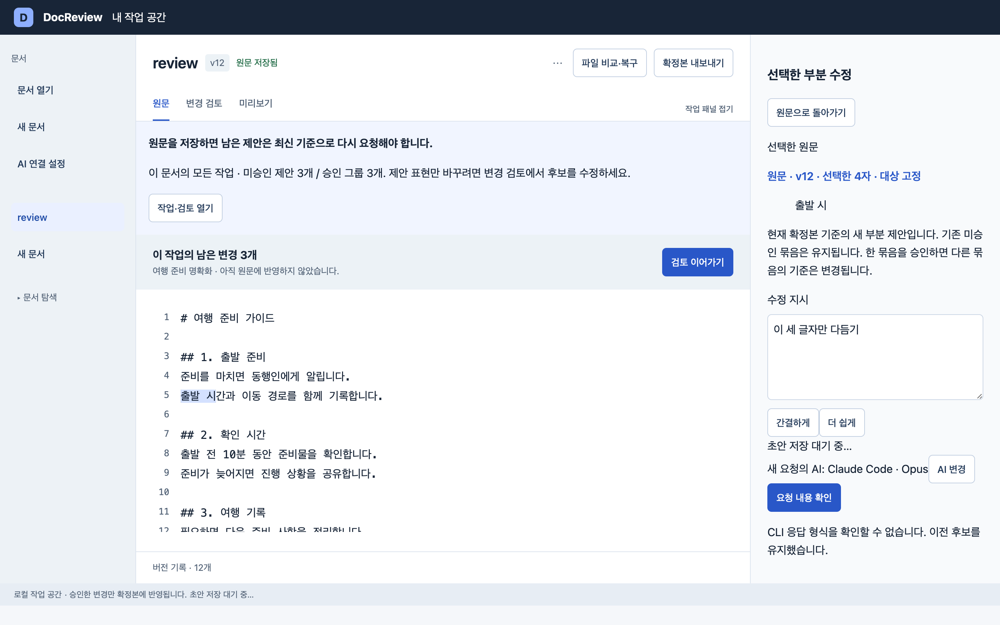
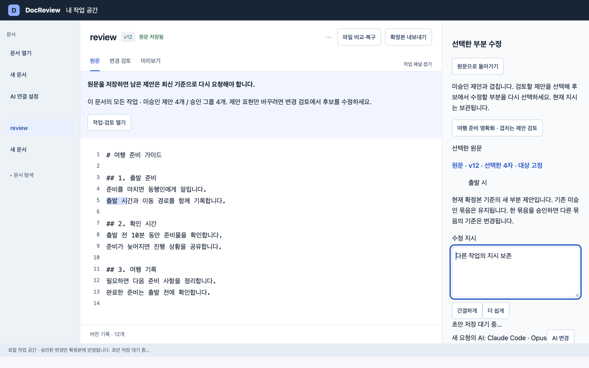

1. 선택 옆에서 시작
선택·복사만으로 요청 범위나 기존 초안을 바꾸지 않습니다. ‘이 부분 수정’을 누를 때 인용을 고정하고 오른쪽에서 지시를 작성합니다. 팝오버는 모달이 아니며 작성 시작 후 닫힙니다.

2. 수정 범위와 전달 문맥 확인
확인 단계는 오른쪽 작성 필드를 대신합니다. 정확한 인용·지시·모델·실제 전달 문맥을 확인하고 최종 버튼으로만 요청합니다. 수정 허용 범위와 외부 전송 문맥을 구분합니다.

3. 정확한 새 미승인 제안 검토
요청 결과의 새 묶음을 바로 엽니다. 확정본 반영은 별도 승인으로 진행하며 다른 제안을 일반 생성처럼 보관 처리하지 않습니다.

실패와 기존 제안 겹침
오류 시 인용·지시를 보존하고 수동 재시도합니다. 미승인 구간과 겹치면 해당 작업의 검토로 명시 이동하며 원문 좌표를 후보 좌표로 추정하지 않습니다.

